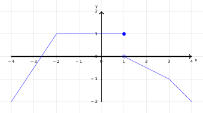

Given a function \(f(x)\), the instantaneous rate of change or derivative of \(f(x)\) at \(a\) is the limit as \(h\) approaches 0 of the average rate of change of \(f(x)\) over \([a, a+h]\), or: \[f'(a):=\lim_{h\to 0} \frac{f(a+h)-f(a)}{(a+h)-a}=\lim_{h\to 0} \frac{f(a+h)-f(a)}{h}\]
We want to find \(f'(1)\) for \(f(x)=x^2-3x+2\) using the limit definition of the derivative.
Find \(f(1)\).
Find \(f(1+h)\) and fully expand it.
Simplify \(f(1+h)-f(1)\) so that it is a multiple of \(h\).
Simplify \(\frac{f(1+h)-f(1)}{h}\) so that it has no \(h\) in the denominator.
Compute \(\displaystyle\lim_{h\to 0}\frac{f(1+h)-f(1)}{h}\).
What's \(f'(1)\)?
We want to find \(f'(1)\) for \(f(x)=x^2-3x+2\) using the limit definition of the derivative.
Let \(f(x)=x^2-3x+2\).
Let \(f(x)=x^2-3x+2\).
Consider \(h(t)=|t|\).
What is \(g(t)\) if \(t>0\)? \(t<0\)? \(t=0\)?
Find \(\displaystyle \lim_{h\to 0^+}\frac{g(0+h)-g(0)}{h}\).
Find \(\displaystyle \lim_{h\to 0^-}\frac{g(0+h)-g(0)}{h}\).
Find \(\displaystyle \lim_{h\to 0}\frac{g(0+h)-g(0)}{h}\).
Let \(f(x)\) be a function, then \(f'(a)\) measure the instantaneous rate of change of \(f\) when \(x=a\).
Suppose the population of rare bird species in a national park, \(t\) days since January 1st 2022 is \(P(t)\) birds.
Suppose that when \(t=30\), there are 572 birds of this species in the park, and \(P'(30)=25\).
What is \(P(30)\) and what does that mean? Include units of any numerical value.
What does \(P'(30)=25\) mean? Include units of any numerical value.
On January 31st, is the number of birds increasing or decreasing (or not)? By how much?
Suppose the population of rare bird species in a national park, \(t\) days since January 1st 2022 is \(P(t)\) birds.
Suppose \(P(45)=722, P'(45)=0\). Explain what these equations mean, every numerical value should have units.
Suppose the population of rare bird species in a national park, \(t\) days since January 1st 2022 is \(P(t)\) birds.
Suppose \(P(224)=1077, P'(224)=-12.2\). Explain what these equations mean, every numerical value should have units.
Consider the plot of \(y=f(x)\):

For each \(a=-3,-2,-1,0,1,2,3\) determine \(f(a)\) and \(f'(a)\), if they exist.
The second derivative of \(f(x)\) denotes the derivative of the derivative of \(f(x)\), denoted \(f''(x)\), \(\frac{d^2}{dx^2}[f(x)]\) or \(\frac{d^2f}{dx^2}\). It denotes the instantaneous rate of change of \(f'(x)\).
The \(n\)th derivative of \(f(x)\) denotes \(n\) consecutive derivatives of \(f(x)\), denoted \(f^{(n)}(x)\), \(\frac{d^n}{dx^n}[f(x)]\) or \(\frac{d^nf}{dx^n}\).
\[f(x)=x^2-3x+2, f'(x)=2x-3, f''(x)=2.\]
Suppose a particle is moving along a straight line, let \(d(t)\) denote it's displacement in meters at time \(t\) seconds.